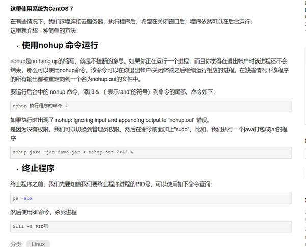

服务器的运用
（阿里云CentOS7）
如何运行 jupyter?
①.在终端输入：" jupyter notebook --no-browser --allow-root "
②.新建一个网页并在网址栏粘贴下面内容：
http://公ip:/端口号（默认8888）/ 或者 “公ip:8888/tree”
例：http://121.41.121.24:9527
如何
如何使程序在Linux下后台运行（关闭终端继续让程序运行的方法）？
①.点击终端里的文件，选择新建文件树，点开home创建新文件夹，创建运行代码的文件
②.返回终端平台，在文件目录下（例:cd /home/dxc）运行：
nohup python xxx.py &
例如：nohup python piclink2.py &
③.备注：不放心可以ls下看看有没有日志生成，还不放心可以在文件树打开日志看看有没有运行。
如何使程序在Linux后台关闭运行：
①.在文件目录下输入：ps -aux
②.找到CPU占用率最高的进程号（PID）
③.输入kill -9 进程号（PID）
例：kill -9 11832
下载后台所采集的数据：
方法一：打开jupyter,找到对应文件，点击download
